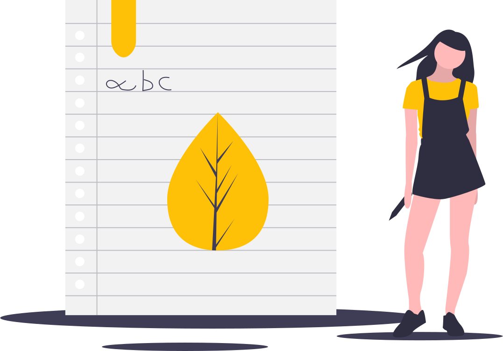

The edge of modern computing.
Rust everywhere 🦀
Rust from the shell to the prompt; from the prompt to the programs.
 Shell
Shell
Floflis have replaced Bash by a modern and faster shell: nu.
But don't worry: your loved bash scripts will still work!

 Prompt 👩🚀
Prompt 👩🚀
Floflis uses a beauty/infinitely customizable, modern and blazing-fast prompt: Starship 🚀

Floflis is an ecosystem which can be a standalone OS (Linux or any other open kernel) or run as a platform inside any other OS:
OS - Lightweight or full-featured OS powering your device
Floflis OS
The lead product of the Floflis Platform 🏅
Currently based on Ubuntu (PCs, Raspberry Pi, SiFive Unmatched - or RaspiOS on its armhf - Raspberry Pi Zero/W - version).

UniOS
The crossover between Uniswap and Floflis OS.
Its Floflis, but themed with Uniswap's design and philosophy.
Currently based in Ubuntu.
Guest - An OS inside your OS
HTML5Apps Platform
Fully featured web apps platform, that can bring Floflis as a graphical app to any OS (Android, Windows, Linux, MacOS, etc).
It is like PortableApps Platform; can run Floflis Central and any other Electron app, but using the same runtime: so apps which had thousand megabytes will have just a few kilobytes.
Still in development. See it on GitHub or take a glance at its in-development site.
CLI
Floflis' operating base. Even the graphical layers uses this CLI.
Composed of DNA, Core and Soil layers. Further CLI layers spawns a graphic desktop.
With Floflis DNA + layers + Cubic, a full Floflis OS .iso can be built.
Learn more
Do you love Floflis?
Soon, you'll have some ways of helping Floflis; and know how your contributions will earn you FLOF tokens.

Receive updates from Floflis
Subscribe to our JsonFeed or RSS feed. You can also follow us on Twitter or other of our social networks.

Your voice matters
Found bugs or wants to suggest a thing? Or to discuss anything?
Submit a GitHub issue here or send an email to: floflis@protonmail.com.
There's also our Discord and Reddit!
To do:
- Email newsletters
- Website in Hugo